Problem-identification tools
The goal of the first stage of the project is to analyze the engineering system and identify the “right” problems to solve. These are deep, hidden issues that represent the root causes rather than the symptoms and are typically not obvious at the beginning.
The outcome of the whole analytical block is a list of key problems that have to be solved during the problem-solving stage to achieve the goal of the project.
According to MATRIZ methodology, the problem-identification toolbox consists of the following tools:
- fuction-cost analysis,
- flow analysis,
- cause-effect chain analysis (CECA),
- trimming,
- feature transfer,
- S-curve analysis, and
- trends of engineering system evolution (TESE) analysis.
A tool that is also used at this stage of the project is innovative benchmarking.
The selection of tools and the order in which they are used should always be tailored to the project’s goal. Projects aimed at developing a new, patentable solution may be conducted differently than those focused on improving an existing system.
Articles
- Function-cost analysis
- Function analysis
- Component analysis
- Component
- Engineering system
- Component model
- Supersystem
- Interaction analysis
- Interaction
- Interaction matrix
- Function modeling
- Function
- Main function
- Target component
- Function disadvantage
- Function rank
- Basic function
- Additional function
- Auxiliary function
- Productive function
- Providing function
- Supporting function
- Transport function
- Measurement function
- Corrective function
- Defect
- Function model
- Value analysis
- Value
- Ideal system
- Functionality index
- Value
- Component analysis
- Cost analysis
- Function-cost diagram
- Function analysis
- Flow analysis
- Flow disadvantage
- Flow
- Cause-effect chain analysis
- Key disadvantage
- Initial disadvantage
- Vicious circle
- Trimming
- Trimming rules
- Trimming model
- Partial trimming
- Trimming problem
- Feature transfer
- Neutral system (Inert system)
- Base system
- Alternative system
- Competing system
- Feature transfer problem
- Key problem
- S-curve analysis
- Innovative benchmarking
Function-cost analysis
Function-cost analysis
Overview
The term of function-cost analysis is sometimes used as a synonym for function analysis. Technically, it should be considered as function analysis supplemented with cost analysis performed in its final stage.
The analysis is usually performed if cost reduction is a goal of the project. It helps identify function disadvantages and cost disadvantages that are later used as building blocks for CECA. It also aids in making decisions about which components should be considered for trimming.

Function-cost analysis is usually presented by adding a column to the function model table. If the project involves developing an innovation strategy, its results can also be illustrated in the form of a function-cost diagram.
The tool should not be confused with value analysis. Value analysis involves mathematically calculating value of components based on the function-cost diagram illustrating results of function-cost analysis.
Articles
- Function analysis
- Component analysis
- Component
- Engineering system
- Component model
- Supersystem
- Interaction analysis
- Interaction
- Interaction matrix
- Function modeling
- Function
- Main function
- Target component
- Function disadvantage
- Function rank
- Basic function
- Additional function
- Auxiliary function
- Productive function
- Providing function
- Supporting function
- Transport function
- Measurement function
- Corrective function
- Defect
- Function model
- Value analysis
- Value
- Ideal system
- Functionality index
- Value
- Component analysis
- Cost analysis
- Function-cost diagram
Function analysis
Function analysis
Function analysis is an analytical tool that identifies functions, their characteristics, and the cost of the system and its supersystem components.
Overview
Every engineering system is designed to deliver specific main function(s). This functionality is the result of functions performed by individual components of the engineering system. Function analysis involves identifying and characterizing these functions, making it the foundation for almost all problem-identification and problem-solving tools used in TRIZ.
The outcomes of the tool are:
- function model of the system,
- a list of function disadvantages.
Function analysis neither provides new information about the analyzed system, nor suggests solutions but is crucial for project success. It organizes and translates information about the system into the language of functions, enabling the effective application of problem-solving tools.
Function analysis, supplemented with cost analysis, helps formulate a system development strategy. It aids in determining which component(s) should be trimmed, which should be improved, and which should remain unchanged.
Types of function analysis
Function analysis is differentiated into
- function analysis of devices, and
- function analysis of processes.
Both serve to build a function model of the system and identify its function disadvantages. They share many similarities, however, there are several significant differences between them.
| stage | function analysis of devices | function analysis of processes |
| component analysis | splitting the system into components, which are substances, fields, or combination of both | splitting the system into components,which are operations |
| interaction analysis | identifying interactions between components | not performed |
| function modeling | identifying functions performed betweeninteracting components | identifying functions performed withinoperations |
| ranking the identified functions as basic, additional, or auxiliaryones | ranking the identified functions as productive, providing(supporting, transport, or measurement), or correctiveones |
Function analysis of devices
Overview
Function analysis of devices is applied to technical systems with a fixed set of components that remains constant over time, such as machines, apparatuses, equipment, etc.
Stages of the analysis
The function analysis of devices consists of three stages:
- component analysis,
- interaction analysis, and
- function modeling.
At each stage, information is gathered to confirm one of the three conditions for a function to occur. First, a list of components is created, as both the function carrier and the function object must be components of the system or its supersystem. Then, pairs of components with any interactions are identified. Finally, for each pair, it is determined whether one component in the pairs alters or intentionally maintains any parameter of the other.
Algorithm for function analysis of the device
Algorithm for function analysis of devices is the following:
- Determine boundaries of the system, its main function, and the target component.
- Perform the component analysis:
- identify all the system components, remember to keep the proper hierarchy of components, and not to split them if not necessary,
- identify relevant supersystem components; remember to consider the components that can provide free resources,
- list all the identified components, e.g., in the form of a table.
- Perform the interaction analysis:
- create the interaction matrix template with the number of columns and rows corresponding to the number of all identified components,
- fill out the interaction matrix template with the names of components in column and the raw headings, in the same order,
- check if there is any interaction for each pair of components in the matrix; record the results of your analysis – with a “+” sign if the interaction exists, a “–” when it does not,
- check if the interaction matrix is symmetrical relative to the diagonal running from the upper left-hand corner to the lower right-hand corner.
- Perform the function modeling:
- check whether any function is performed for every interaction identified in interaction analysis,
- specify category of each function,
- determine the level of performance of the useful functions,
- rank the functions (if needed),
- calculate the functionality index of the engineering system components (if needed),
- calculate the value of each component of the engineering system (if needed).
Function analysis of processes
Overview
Function analysis of processes is applied to technical systems, in which the set of components changes as the time goes, i.e. some of them appear, while others disappear from the system.
It is a fairly universal analytical tool. In the MATRIZ methodology, it was developed to deal with technological processes. However, with appropriate modifications, it can be applied to any processes that can be presented as step-by-step procedures, such as administrative, managerial, or logistical processes, among others.
Stages
Function analysis of the process consist of two stages:
- component analysis, and
- function modeling.

No that, on the contrary to devices, interaction analysis is not conducted for processes. In TRIZ, interaction is understood as physical contact, and since no physical contact occurs between the components of processes (operations), there are no interactions to analyze.
The first step in process analysis involves identifying all the relevant components of the system. However, the concept of components differs – they are no longer substances and/or fields but the operations that constitute the process. Additionally, neither the target component nor supersystem components are used here. Technically, they exist, however, essentially are not actively used.
The second and final step of function analysis for processes is function modeling. Due to the specific nature of the system, functions are no longer identified between components but within the components themselves, which in this case are the operations.
Algorithm for function analysis of the process
Algorithm for function analysis of processes is the following:
- Determine boundaries of the process, the main function(s) and its final product.
- Perform the component analysis:
- identify all the operations of the process; remember to keep the proper hierarchy of operations, and not to split them if not necessary,
- identify relevant supersystem operations; remember to consider the operations that can provide free resources,
- list all the identified components, e.g., in the form of a table.
- Perform the function modeling:
- identify functions performed within each operation,
- specify category of each function,
- rank the functions,
- calculate the functionality index of the engineering system components (if needed),
- calculate the value of each component of the engineering system (if needed).
Articles
- Component analysis
- Component
- Engineering system
- Component model
- Supersystem
- Interaction analysis
- Interaction
- Interaction matrix
- Function modeling
- Function
- Main function
- Target component
- Function disadvantage
- Function rank
- Basic function
- Additional function
- Auxiliary function
- Productive function
- Providing function
- Supporting function
- Transport function
- Measurement function
- Corrective function
- Defect
- Function model
- Value analysis
- Value
- Ideal system
- Functionality index
- Value
Component analysis
Component analysis
Component analysis is a stage in function analysis that identifies components of the engineering system and its supersystem.
Overview
Component analysis is the starting point of the function analysis, both for devices and processes. Its goal is to identify all components of the engineering system and relevant components of its supersystem.
The output of the analysis is a component model, which serves as input for interaction analysis when analyzing a device, and for function modeling when analyzing a process.
Defining the system boundaries
Before proceeding to the component analysis, it is essential to define boundaries of the system. They are crucial during function modeling stage as they significantly influence function ranking.
For devices, boundaries between the system and its supersystem are necessary to determine the status of components, i.e. to determine which components belong to the system and which of them belong to its supersystem. Additionally, main function of the system can only be identified once the boundaries are defined – as the boundaries change, the main function may also change, along with the target component.
In processes, supersystem components do not play an active role in the function analysis; however, how we define the boundaries can still have a direct impact on ranks of functions.
Component analysis for devices
Procedure
The procedure of the component analysis for the device is the following:
- establish boundaries of the system,
- identify all the system components and relevant supersystem components (see: Recommendations),
- create the component model in an appropriate form.
Recommendations
The choice of the hierarchy level depends on the goal and constraints of the project. The analysis should be conducted at the level where components are directly linked to the problem. In some cases, these components may need to be broken down into smaller parts for clarity.
For the supersystem components, select only those that are relevant to the project, but don’t overlook those that may provide resources that can be used to improve the system, includingair or gravity.
When performing component analysis for devices, the system’s specifications can be very helpful; however, the level of detail can be adjusted as needed. Components sourced from external suppliers, where there is no control over the design or redesign is not permitted, sould be included as a single assembly without detailed analysis.
Component analysis for processes
In the function analysis of the process, the component analysis is a phase when the process is split into operations that are its components.
The operations in the process are usually carried out sequentially:

They may also be performed in parallel:

Regardless of whether the operations are carried out in parallel or sequentially, it may happen that they will create a loop:

Procedure
The procedure of the component analysis for the process is the following:
- establish boundaries of the system,
- identify all the operations of the process (see: Recommendations),
- identify relevant supersystem operations, particularly those that can provide free resources,
- create the component model in an appropriate form.
Recommendations
Similarly to devices, in the analysis of processes, the decision on the level of detail in the breakdown depends on us and should be based on the project’s goal. The system can be divided into large operations or a greater number of smaller ones.
It’s important to remember that having operations with only one function is not practical. On the other hand, if an operation contains too many functions, it may significantly complicate trimming.
Existing process documentation, such as standard operating procedures (SOPs), process flow diagrams, equipment specifications, or transformation flowsheets, can be a very useful source of data for component analysis. Interviews with employees who operate, maintain, or supervise the process can also provide valuable insights. Finally, it’s worth spending some time on the production floor, observing the process in action, analyzing historical process data, and so on. This hands-on approach may reveal discrepancies compared to the documentation.
Articles
- Component
- Engineering system
- Component model
- Supersystem
Component
Component
Component is a material object that constitutes a part of an engineering system or its supersystem.
Overview
As a rule, a component is defined as a part that constitutes an engineering system or its supersystem. However, it should be emphasized that there is a significant difference between components understood as parts of devices and those that make up processes.
For both types of systems, components are identified during the component analysis, i.e. the first stage of function analysis.
Component of a device
Component of a device may be:
- a substance, i.e. an object with a rest mass;
- a field, an object without a rest mass that transfers interaction between substances, or
- a combination of a substance and a field.
Some examples of components can be the following:
- a substance:
- a wheel (of a car)
- a screw
- air
- an operator (a person)
- a field:
- gravity
- light (electromagnetic field)
- electric current
- a combination of a substance and a field:
- a light bulb with the light it emits
- a radio with a sound it emits (acoustic field)
- a star (a celestial body) with its radiation
Biological objects can also be components, for examaple:
system components:
- an operator (in the lift to move things),
- microorganisms (in a bioreactor to produce biogas),
- a flower (as a decoration to entertain a person),
supersystem components:
- a pig (for a lifestock trailer),
- a heart (for a cardioverter),
- grass (for a lawnmower).
Field in TRIZ
In TRIZ, the concept of a field extends beyond the traditional scientific definition and includes any interaction between system components, not just classical fields like gravity and electromagnetism. The term field is used from a technical perspective to facilitate idea generation. Fields represent various interactions that can occur between substances in a system.
Categorizing fields according to their types has led to the development of MATChEM that is an acronym representing six types of fields:
- mechanical: interactions that are perceived as mechanical energy, e.g. gravity, friction, centrifugal force, vibrations, etc.
- acoustic: sound interactions like audible sound, ultrasound, seismic waves, resonance, etc.
- thermal: temperature related interactions, e.g. heating, cooling, phase changes, etc.
- chemical: interactions and reactions like oxidation, polymerization, synthesizing, as well as using catalysts or inhibitors, etc.
- electrical: phenomena based on electricity, e.g. Foucault currents, electrostatic charges, ionization, piezoelectric effects, etc.
- magnetic: mostly magnetic fields.
The last two letters (EM) also may stand for electromagnetic and refer to phenomena like microwaves, X-rays, light, or color.
Component of a process
A component of a process is an operation.
Operationis a set of functions within a technological process grouped because of certain considerations.
Some examples of process components can be the following:
system: making a dough for a pizza
- mixing ingredients,
- kneading the dough,
- proofing the dough,
- shaping the dough,
- rolling and stretching the dough.
system: polymerization in a reactor
- monomer introduction,
- catalyst addition,
- reaction monitoring,
- polymer formation,
- mixing,
- product removal,
- post-reaction treatment.
system: a fermenter process
inoculation (introducing microorganisms),
nutrient addition,
aeration,
mixing or agitation,
fermentation,
gas management,
sampling,
harvesting,
cleaning and sterilization.
Tagged:
field
matchem
substance
Engineering system
Engineering system
Engineering (technical) system is a system that has been developed to perform a function.
Overview
Engineering system and technical system are the terms used interchangeably in TRIZ.
The function for which the system is designed is called main function. A system that doesn’t perform any main function cannot exist, but there are many systems performing several main functions.
Defining boundaries of the engineering system is a crucial step in any project. The boundaries are determined by the project goal and project constraints. They depend on what is necessary and possible to change and stay within the project budget and other specifics. Everything beyond the boundaries, including the environmental surrounding, is called a supersystem.
Defining the system boundaries of the system is important because:
- main function of the system can only be identified once the boundaries are defined – as the boundaries change, the main function may also change, along with the target component;
- it determines which components belong to the system and which of them belong to its supersystem;
- the function rank depends on the main function – since the boundaries of the engineering system are determined by the project goal and project constraints, they may depend on what part of the device is within the scope of the project (what is allowed to redesign, what changes are covered by the project budget, etc.).
Technical systems can also include subsystems or components created by nature, both organic (plants, animals, or humans) and inorganic (minerals, water, etc.).
Types of engineering systems
In general, two types od engineering system are considered in TRIZ:
- devices, and
- processes.
Device as an engineering system
By the device, we understand a system with a certain set of components that remains unchanged in time. Their parameters can change, but no components appear, disappear, or merge into one. The device can be machinery, apparatus, equipment, etc.
Examples of engineering systems that are devices can be the following:
- a car,
- a computer,
- a table,
- a book,
- an air conditioner, etc.
Process as an engineering system
Technological process is a process that uses material objects, such as raw material, labour, energy, and machinery, to create finished products.
By the process, we understand a system, in which the set of components changes as the time goes. Some of them appear, while others disappear from the system. To model such a system, the axis of time has to be introduced:
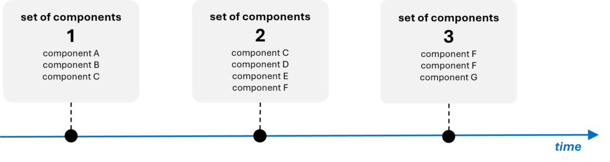
Examples of engineering systems that can be considered processes are the following:
- a conveyor system (to assembling products),
- process of polymerization,
- a combustion chamber (for burning fuel to produce heat and energy),
- converting sugars into alcohol or acids in a fermenter,
- a concrete mixer, etc.
Component model
Component model
Component model is a set of components belonging to the analyzed engineering system and its supersystem.
Overview
Component model is an output of component analysis performed as a first step of function analysis, for both devices and processes. In the function analysis of devices, the model is an input for interaction analysis. In function analysis of processes, the interaction analysis is skipped, and the component model (in this case, operations) serves as the input for function modeling.
Presentation of the component model
The way the component model is presented is quite flexible.
Presentation for the device
It is a good practice to list the identified components in the form of a table. In the first column, enter the name of the engineering system, in the second column – its components, and in the third column – the components of its supersystem:
- description of the engineering system,
- system components, and
- components of the supersystem.

Presentation for the process
For processes, the component model is usually presented as a list of operations. If it is needed to show whether the operations are sequential or parallel, it is useful to create a graph, for example:
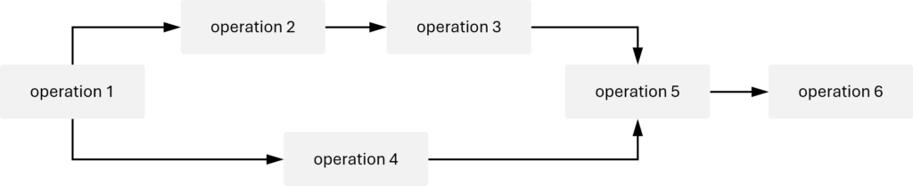
Supersystem
Supersystem
Supersystem is a system that contains the analyzed engineering system as a component.
Overview
Supersystem is everything beyond the boundaries of the engineering system, including the environmental surrounding.
If the engineering system is a chair, the components of its supersystem may be the floor, the walls, the window, the air, other furniture nearby, the person sitting in the chair etc. If the system is a seat of a chair, the supersystem’s components will be not only the floor, the walls, the window, the air, the person sitting in the chair, but also legs of the chair and back of the chair.
Interaction analysis
Interaction analysis
Interaction analysis is a stage of function analysis of devices that identifies interactions between the components included into the component model.
Overview
The primary purpose of the interaction analysis is to identify whether interactions exist between components within the component model. At this stage, the consequences of the identified interactions are not considered; the focus is solely on their presence.
Note that the interaction analysis is a stage of function analysis that is performed only for devices. In function analysis of processes this step is entirely skipped because there are no interactions between components.
Procedure
To facilitate the interaction analysis, the previously developed component model is utilized. The analysis is typically conducted by creating an interaction matrix, which is the output.
The matrix is created according to the following steps:
- create the matrix template with the number of columns and rows corresponding to the number of all identified components,
- fill out the matrix template with the names of components in column and the raw headings, in the same order,
- check if there is any interaction for each pair of components in the matrix; record the results of your analysis – with a “+” sign if the interaction exists, a “–” when it does not,
- check if the interaction matrix is symmetrical relative to the diagonal running from the upper left-hand corner to the lower right-hand corner.
Articles
- Interaction
- Interaction matrix
Interaction
Interaction
Interaction is a physical touch between components of the engineeging system and/or components of its supersystem.
Overview
Interaction is one of key terms in function analysis for devices (not applied for processes) as the a fundamental principle is that for any function to exist between two components, there must be an interaction (physical touch) between them.
The occurrence of interactions depends directly on how components are defined. Identifying interactions between components that are substances is usually straightforward – they occur when these components come into direct contact, even at a single point.
If a component is a field, such as an electromagnetic field (light), there is a physical interaction between the field and its emitter (e.g., a light bulb) as well as between the field and its receiver (e.g., a watching person). However, in this case, the emitter (the light bulb) and receiver (the person) do not interact directly with each other.
If a component is defined as a combination of a substance and a field (e.g., a light bulb along with the electromagnetic field it emits), then an interaction with the receiver does exist (the light bulb “touches” the person through the light).
Interactions between components are identified during interaction analysis, which is the second stage of function analysis for devices. They are recorded in the form of an interaction matrix, which then serves as the input for function modeling, the final stage of the analysis.
Interaction matrix
Interaction matrix
Interaction matrix is a table showing interactions among components of the analyzed engineering system and its supersystem. It is a result of the interaction analysis.
Overview
The interaction matrix is an output of the interaction analysis conducted during the function analysis of a device. It is typically presented in the form of a table, where the input data are the components identified during the component analysis. Accurate completing this matrix is crucial for conducting the next stage of the function analysis, which is function modeling.
Creating the interaction matrix
The interaction matrix is created based on the component model. To build it, follow the steps:
- Construct a matrix with rows and columns equal to the number of all components identified during the component analysis.
- Place the names of the components in both the column headers and row headings in the same sequence. It is recommended that the components be entered in the following order:
- the target component(s) of the system,
- the system components,
- the supersystem components.
- In the matrix, record the presence of an interaction with a “+” sign and the absence with a “–” sign.
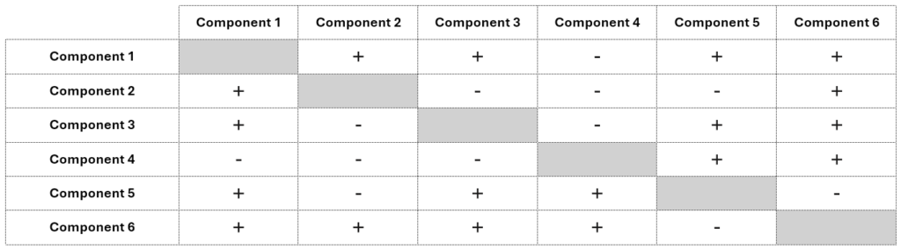
The interaction matrix must be symmetrical relative to the diagonal that runs from the upper left corner to the lower right corner. If component 1 interacts with component 2, then 2 must also interact with 1. This symmetry arises because the matrix uses the same set of components in both its rows and columns in the same order, making any interaction mutual.
When constructing the interaction matrix, it’s important to accurately assess the presence of interactions between components. Mislabeling these interactions can affect the outcome of the whole function analysis.
If a non-existent interaction is mistakenly marked with an “+,” the analysis process may take longer as it will be examined for potential functions later. However, failing to mark an actual interaction has more serious consequences, as it can result in missing functions, leading to incomplete analysis and possibly incorrect conclusions. In cases of uncertainty, it is advisable to use a “+” to ensure all potential interactions are considered.
Function modeling
Function modeling
Function modeling is the stage in function analysis, during which a function model of the analyzed engineering system is built.
Overview
Function modeling is the final stage of function analysis for both devices and processes. This stage involves creating a function model in the form of a table, a graph, or both.
If cost reduction is the goal of the project, function modeling is supplemented with cost analysis, which provides important information about the components. On one hand, it helps identify the cost-related disadvantages, on the other, it aids in making decisions about which components should be considered for trimming. Function-cost analysis is usually presented by adding a column to the function model table.
Differences between function modeling for devices and for processes
Function modeling is the stage of function analysis where the two types of analysis differ the most.
Input
The input to function modeling for devices is the interaction matrix, specifically the boxes with the sign “+”. Since interaction is a basic condition for the function to exist, only those pairs of components between which it exists are considered, while all the cells assigned with “–“ are being ignored.
For each cell containing „+” sign, an analysis is performed to investigate if the interaction between components represents a function. The components in the vertical axis are treated as function carriers and the components in the horizontal axis as function objects.
Since the interaction analysis for processes is not performed at all, the input to function modeling is a component model created during the component analysis.
Relation between functions and components
For both types of analyses, the notion of a function remains the same; however the role played by components changes.
In the case of devices, both the carriers and the objects of functions are the previously identified components:

In the case of processes, functions are performed within components (operations), meaning that neither their carriers nor their objects are components:
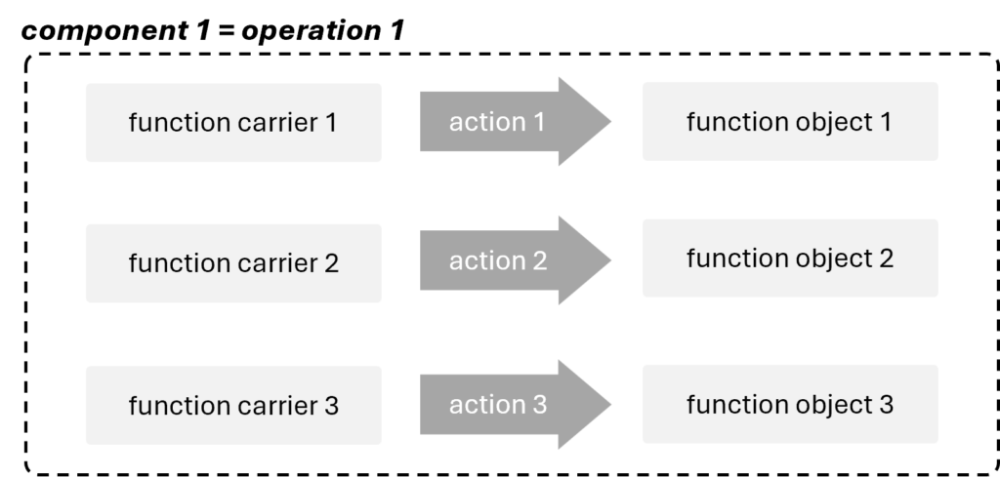
Function ranking
For devices, a function can have one of three ranks, which depend solely on the status of their objects. The most valued are functions whose object is the a target component. Those directed at other components of the supersystem hold a slightly lower rank. Finally, the least valued are functions that act on the components of the system itself.
Since the target component and the supersystem components are not actively used in processes, ranking for them is based on different criteria.
Procedure
Procedure for function modeling for devices
For devices, the function modeling is performed according to the following procedure:
- check whether any function is performed for every interaction identified during the interaction analysis,
- specify each function as useful or harmful,
- determine the level of performance of the useful function,
- rank the functions (if needed),
- calculate the functionality index of the engineering system components (if needed),
- calculate the value of each component of the engineering system (if needed).
Procedure for function modeling for processes
For processes, the function modeling is performed according to the following procedure:
- identify functions performed within each operation,
- specify each function as useful or harmful,
- rank the useful functions.,
- calculate the functionality index of each operation (if needed),
- calculate the value of each operation of the engineering system (if needed).
.
Articles
- Function
- Main function
- Target component
- Function disadvantage
- Function rank
- Basic function
- Additional function
- Auxiliary function
- Productive function
- Providing function
- Supporting function
- Transport function
- Measurement function
- Corrective function
- Defect
- Function model
Function
Function
Function is an action performed by one material object (function carrier) to change or maintain a parameter of another material object (object of the function).
Overview
Function in TRIZ plays a particularly crucial role. One of the main paradigms of the methodology is separating the function from its carrier. In practice, this means that as long as the function is being performed, it does not matter which component performs it. This approach helps us overcome limitations and discover innovative solutions.
Elements of the function
Function consists of 3 elements:
- a function carrier, i.e., a substance and/or a field performing an action,
- a function object, i.e., the addressee of the action,
- a verb describing the action being performed.

Functions are identified during function analysis, specifically its last stage – function modeling.
Conditions for a function existence
For a function to be considered as performed, the following conditions must be met:
- both the function carrier and the object of the function are substances and/or fields,
- the function carrier interacts with the object of the function, and
- the action performed by the function carrier changes or maintains (keeps unchanged) some parameter of the object; if such a parameter cannot be identified, it means that there is no function.
Note that one function can change only one parameter of the function object. If the function carrier changes more than one parameter of the function object, it means that it performs more functions.
Some examples of functions can be the following:
- the hammer moves the nail (changes its position in space),
- the glasses focus light (changes its direction),
- the book informs the reader (changes the scope of their knowledge).
In the table below, the left column shows some examples of incorrectly formulating functions. The right column contains correctly formulated functions.
| incorrect formulation of functions (no parameter of the object is changed = no function) | correctly formulated functions |
| the sunglasses protect eyes | the sunglasses direct light |
| the vacuum cleaner cleans the carpet | the vacuum cleaner removes dust |
| the dryer dries clothes | the dryer removes water |
| the ruler measures the length | the ruler informs a person |
| the lamp illuminates a book | the lamp generates light |
| the drill makes a whole in a board | the drill changes the shape of a board |
Evaluation of functions
Functions are evaluated in terms of:
- usefulness (categories),
- level of performance, and
- importance (ranks).
Functions are evaluated during function modeling, and the results of this evaluation are used in subsequent steps of the analytical process. Categories and performance levels are essential for identifying the function disadvantages of the system, which serve as inputs for the cause-effect chain analysis (CECA). Function ranking is crucial for trimming.
Categories of functions
In modern TRIZ, two categories of functions are identified:
- useful functions, and
- harmful functions.
Useful function is a function performed by a function carrier that results in a positive (required) change or preservation a parameter of an object of the function.
Harmful function is a function performed by a function carrier that results in an inacceptable change or inacceptable preservation of a parameter of an object of the function.
Simply put, if the function carrier changes the object’s parameter in a desired direction, the function is useful; if it changes it in an undesired direction, the function is harmful.
Functions themselves are neither harmful nor useful. Their category must always be considered in the context of the specific situation. The function hot air melts plastic would be useful if the goal is to increase the plasticity of the plastic, but if the hardness of the plastic needs to be preserved, it would be a harmful function.
Level of performance
Level of the function performance is determined only for useful functions. For harmful functions it is ignored, and they inherently represent function disadvantages of the system.
The level of performance determines whether the useful function is performed normally (i.e., within the intended parameters, exactly as it was designed) or is performed excessively or insufficiently. The excessive and insufficient performance of the function are viewed as function disadvantages of the system.
The performance level of a function can be illustrated by the example of a bicycle rim brake. Its purpose is to hold the tire to enable smooth and effective stopping of the bicycle. If the brake holds too tightly, the stop is too abrupt, which can lead to an accident. If the brake holds too loosely, the braking distance dangerously increases, also raising the risk of an incident.
Function ranking
Function ranking is conducted when it is necessary to develop an innovation strategy. It involves identifying the type of the function and then assigning it an appropriate number of points based on that type.
While categories and level of performance are the same for all types of engineering systems, function ranking is completely different for devices and processes. They are as follows:
| function ranks for devices | function ranks for processes | score |
| basic function | productive function | 3 |
| additional function | providing function | 2 |
| auxiliary function | corrective function | 1 |
Function ranking plays a particularly important role in trimming for processes because the type of the function is the only factor determining which trimming rule will be applied.
Practical tips on formulating functions
Here are some practical tips on how to formulate a function correctly:
- Formulate the function in the affirmative form – not to do something is not a function. It relates both to useful and harmful functions.
- Do not use declarative terms (e.g. to provide, to protect, or to seek); they do not change/maintain any parameter of the object, hence do not constitute any function.
- Be as specific as possible.
- If you are unable to determine the action with one verb, you can use the formula: component A changes (or maintains) a parameter X of component B.
- Remember that function carrier cannot perform any function on itself. If you come across such a situation, split the object into two parts – one part will perform the the role of function carrier, the other one the role of function object.
Function as a model of a problem
A generalized function can be used as a primary criterion for identifying technologies that exist worldwide. By reducing functions to universal terms, it becomes possible to identify technologies performing similar functions in both related and unrelated industries.
The tool designed for this purpose is function-oriented search (FOS).
Main function
Main function
Main function is the function for which the engineering system was designed.
Overview
An object of the main function of the engineering system is called target component. It always belongs to the supesystem; the engineering system cannot perform the main function on any of its components.
The determination of the main function and the target component depends on how the system’s boundaries have been defined. As we change the boundaries of the system, the main function and the target change too.
While a system that does not perform any main function cannot exist, there can be systems that perform several (sometimes a lot) main functions. For example, the main function of the air conditioner can be to heat the air, cool the air, move moisture in or out of the air, etc. Swiss army knife or a food processor perform even more main functions.
If there are several main functions, there may be several targets too. If the system performs several main functions, its targets can be different components of the supersystem or different main function can be directed on one target:
The main function is something that never changes during the whole life cycle of the system. If a spoon is broken and it’s hidden in a drawer, its main function is still to hold liquid.
Depending on the circumstances, each technical system can perform some other functions. For example, a chair is designed to support a person, but one can also block the door with it, hang some clothes on it, or use it to break the window during fire. However, the chair was not designed to hold clothes, block doors, or break windows; it was designed to support a person.
Articles
- Target component
Target component
Target component
Target component is an object of the main function of the engineering system.
Overview
The target component is always a component of the supersystem.
If the system performs several main functions, there may be several targets too. Different components of the supersystem can be the targets, or different main functions can be directed on one target.
Some examples of the target components can be the following:
- a person is a target of the car (the car carries a person),
- a bullet is a target of the helmet (the helmet stops a bullet),
- a bike-frame is a target of the wheel (the wheel moves a bike-frame).
Function disadvantage
Function disadvantage
Function disadvantage is a disadvantage of an engineering system identified during the function modeling.
Overview
There are 3 types of function disadvantages:
- harmful functions,
- useful functions performed insufficiently,
- useful functions performed excessively.
Identifying all function disadvantages of the system is one of the main goals of the function analysis. Along with flow disadvantages, they serve as key inputs for the cause-effect chain analysis (CECA) in the analytical stage of the project.
Function model
Function model
Note! Due to specifics of function modeling for devices and for processes, there is a slight difference between the definitions of the function model.
Function model of the device is a model of an engineering system that identifies and describes functions performed by the components of the system and its supersystem, their usefulness and performance level, and costs.
Function model of the process is a model of an engineering system that identifies and describes functions performed within the components of the system, their usefulness and performance level, and costs.
Overview
Function model is created during the last stage of function analysis referred to as function modeling. Along with the list of function disadvantages, it represents the final outcome of the entire analysis.
The model is the input for trimming as it provides the information about what useful functions of trimmed components should be transferred and what new carriers may be used.
Presentation
Both for the devices and for processes, the function model can be presented in two ways – either as a table or as a graph.
It the project involvs many components, the table is usually employed, since the graph could be too complicated and therefore unreadable. The graph form is usually used for systems with a small number of components.
Function model as a table
For the device, the table usually contains a list of components, their functions, categories of functions (useful or harmful), the level of performance of useful functions (normal, excessive or insufficient), and a ranking of functions (basic, additional, auxiliary), which is the basis for calculating the functionality index of the components.
If it is necessary to calculate the functionality index, it is being included in the tabular function model. In this case the model not only contains a list of components, their functions, categories of functions, the level of performance of useful functions, but also the ranking of functions (basic, additional, auxiliary), as well as the functionality index of functions
In some cases, the table can be extended with additional parameters for categorizing components and functions if this helps in classifying components, e.g. the costs of components and their values.
The picture below presents a schematic for creating a tabular function model of a hypothetical device:

The following picture presents a schematic for creating a tabular function model of a hypothetical process:

Function model as a graph
While the tables for function models of devices and processes are quite similar, their presentation in the form of graphs differs significantly.
Graph for a device
To visualize the function model of the device, it is recommended that the shape and color coding for components implemented in component model be used. Additionally, shape and color coding for functions should be determined. Usually, it is as follows:

Using the proposed symbols, the example function model presented in the table in the Function model as a table section can be graphically represented the following way:
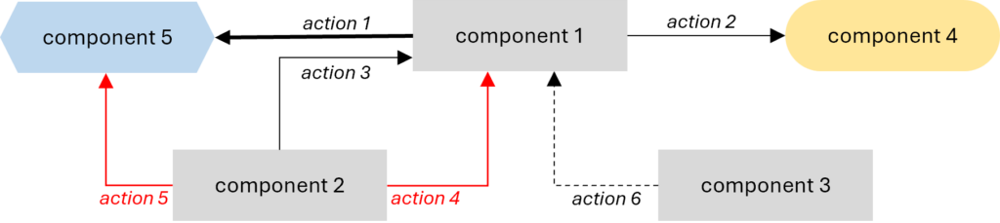
When creating the graph, it is important to maintain the correct direction of the arrows representing the functions, so that they clearly indicate which component is the carrier, and which is the object of the function.
Graph for a process
The function model of a process in the form of a graph is highly useful when it is necessary to reflect the relationships between operations – for instance, whether they are performed in parallel or sequentially. Below, we present the simplest graphical process model. It includes only functions and their categories. This information can be supplemented with additional data, such as the level of performance, rank, or the total score of the entire operation.

The graph represents an example of the process model described in the table above. To maintain the schematic clarity of the function graph, we used the format carrier (action) object. In place of (action), a verb describing the specific function should be inserted, e.g., carrier A moves object Z, carrier B holds object X, etc.
Function rank
Function rank
Function rank is a dimensionless measure that determines the importance of the useful function.
Overview
Function ranking is conducted when it is necessary to develop an innovation strategy.
Usually, it is calculated for components of the engineering system only; components of the supersystem are not ranked.
Ranking involves identifying the type of the function and then assigning it an appropriate number of points based on that type. The purpose of the scoring system is to establish relative importance among functions. The total points of all functions performed by a given component allow for calculating its functional index, which is essential for estimating the component’s value to the system. During the ranking only useful functions are considered, harmful functions are ignored. The level of performance is also not taken into account.
Functions are ranked for both devices and processes, but different criteria applied for them.
Function ranks for devices
The evaluation criterion here is the status of the component that is the object of the function. The function with the highest value (basic) is the one performed on the target component, i.e., the object of the main function. Functions performed on other components of the supersystem (additional) have a lower value. The least valued are the functions performed on the components of the system (auxiliary) since the primary concern is about interactions between the system and its supersystem components.
Functions for devices have three ranks, which are usually based on the following scoring system:
- basic function – 3 points,
- additional function – 2 points,
- auxiliary function – 1 point.
Function ranks for processes
Applying the same criteria used for devices to functions performed in processes turns out to be impossible. In this context, neither the target component nor the supersystem components are actively utilized, even though they technically exist.
For processes, functions have ranks, which are usually based on the following scoring system:
- productive function – 3 points,
- providing function (supporting, transport, or measurement function) – 2 points,
- corrective function – 1 point.
The most valued are functions directly resulting with an irreversible change in the final product of the process (productive). Functions that help perform other functions but are not resulting with an irreversible change at the end of the process (providing) are slightly less important. Corrective functions have the lowest rank.
The algorithm for function ranking for processes can be presented in the form of the following diagram:

In the function analysis of processes, the ranking is particularly important because what happens to a function during trimming depends closely on its rank. For devices, any rule can be applied to functions of any rank (except Rule A, which is not recommended if the removed component performs a basic function). However, for processes, there is no universal set of rules. A trimmed operation typically includes a broad set of functions, and each of them must be appropriately addressed based on its rank.
Articles
- Basic function
- Additional function
- Auxiliary function
- Productive function
- Providing function
- Supporting function
- Transport function
- Measurement function
- Corrective function
- Defect
Basic function
Basic function
Basic function is a useful function directed toward a target component of the analyzed engineering system.
Overview
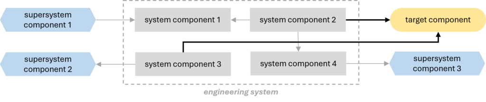
The basic function is one of the three types of functions (alongside additional and auxiliary) that can be performed by components of an engineeiring system that is a device. As a function directed at the target component, it holds the highest value in the function ranking (usually 3 points).
The basic function should not be confused with the main function. The target component is the object of both, but their carriers are significantly different. The basic function is performed by a component of the system, whereas the main function is performed by the system as a whole.
Additional function
Additional function
Additional function is a useful function that acts on a component of the supersystem that is not a target component.
Overview

The additional function is one of the three types of functions (alongside basic and auxiliary) that can be performed by components of an engineeiring system that is a device.
As a function directed at a supersystem component, it ranks higher (usually 2 points) than functions directed at system components but not as high as the basic function performed on a target component. This is because the ranking approach assumes that the main emphasis is placed on interactions between the system and the components of its supersystem.
Auxiliary function
Auxiliary function
Auxiliary function is a useful function that acts on a component of the analyzed engineering system.
Overview

The auxiliary function is one of the three types of functions (alongside basicand additional) that can be performed by components of an engineeiring system that is a device.
As a function directed at a system component, it has the lowest rank in function ranking (usually 1 point). This is because the ranking approach assumes that the main emphasis is placed on interactions between the system and components of its supersystem. How well the functions inside the system are performed is of least importance.
Corrective function
Corrective function
Corrective function is a useful function that eliminates a defect.
Overview
The corrective function is one of the three types of functions (alongside productive and providing) that can be performed within operations (components) of an engineeiring system that is a process.
As a function whose only purpose is to eliminate defects arising in the process, it is ranked the lowest among all functions in the function ranking. In the most commonly used scoring system, it receives 1 point.
Articles
- Defect
Defect
Defect
Defect is a material object (a substance or a field) that impairs performance of a useful function or performs some harmful function.
Overview
A defect is a phenomenon that occurs in engineering systems that are processes.
It can be introduced intentionally at preceding operations where it performed useful functions, or it may occur independently of us.
Productive function
Productive function
Productive function is a useful function that irreversibly (permanently) changes a parameter of its object.
Overview
The productive function is one of the three types of functions (alongside providing and corrective) that can be performed within operations (components) of an engineeiring system that is a process.
The only criterion for a productive function is whether the change it causes remains in the final product at the end of the process. For this reason, it is the highest-valued function in the ranking for processes (usually 3 points).
Providing function
Providing function
Providing function is a useful function that is necessary for the performance of another useful function.
Overview
The providing function is one of the three types of functions (alongside productive and corrective) that can be performed within operations (components) of an engineeiring system that is a process.
There are 3 types of providing functions:
- supporting function,
- transport function, and
- measurement function.
In the function ranking, providing functions are valued lower than productive functions but higher than the corrective ones. In the most commonly used scoring system, they receive 2 points.
Articles
- Supporting function
- Transport function
- Measurement function
Measurement function
Measurement function
Measurement function is a useful function that reveals information about components.
Overview
The measurement function is one of the three types of providing functions (alongside supporting and transport) that can be performed within operations (components) of an engineeiring system that is a process.
As a providing function, it is valued lower than productive function but higher than the corrective one in the function ranking. In the most commonly used scoring system, it receives 2 points.
It is important to remember that a function that reveals information about components can be classified as a providing measurement function as long as measuring or detection is not the main function of the process. If it is, then it will be considered a productive function.
Supporting function
Supporting function
Supporting function is a useful function that temporarily changes a parameter of the product.
Overview
The supporting function is one of the three types of providing functions (alongside transport and measurement) that can be performed within operations (components) of an engineeiring system that is a process.
As a providing function, it is valued lower than productive function but higher than the corrective one in the function ranking. In the most commonly used scoring system, it receives 2 points.
Transport function
Transport function
Transport function is a useful function that changes a position of its object in space.
Overview
The transport function is one of the three types of providing functions (alongside supporting and measurement) that can be performed within operations (components) of an engineeiring system that is a process.
As a providing function, it is valued lower than productive function but higher than the corrective one in the function ranking. In the most commonly used scoring system, it receives 2 points.
It is important to remember that a function that changes a position of its object in space can be classified as a providing transport function unless transport is the main function of the process. If it is, then it will be considered a productive function.
Value analysis
Value analysis
Value analysis is an analytical tool that compares relative functionality and relative cost of the system components.
Overview
Value analysis is a historical tool that was once used as the basis for identifying components to trim. At the time, this term referred to the simultaneous execution of function modeling and cost analysis.
Value analysis involved calculating and comparing value of system components. It was conducted based on the function-cost diagram.
Today, it is rarely used in projects and has been replaced by other tools. Practice has shown that the list of components immediately associated with key disadvantages from CECA or the disadvantages (mainly cost-related) identified through function-cost analysis provide much more reliable indications than the value of components derived from calculations.
Articles
- Value
- Ideal system
- Functionality index
Value
Value
Value is the ratio of a normalized sum of component/system function points over the sum of its costs.
Overview
Historically, value was calculated during the value analysis. Depending on the project, it was used for individual components or the entire systems.
This concept helps in understanding factors that influence component (or system) value in TRIZ, but it is no longer applied in contemporary projects.
Calculating value
Value can be presented in the form of the following formula:
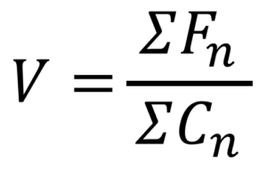
where Fn means the normalized sum of function points, and Cn is normalized costs.
Value can never be negative. Both the function point score and costs are positive, so their ratio is also positive. For a component/system with very low function point score and very high cost, its value may aim for 0, however it still remains positive.
Calculating value of components
The sum of function points can be calculated based on a function ranking, while the costs are calculated during cost analysis.
The way of calculation should be identical for all components. Both the function score and the cost of each component should be normalized relatively to the total function score and the total cost of the whole system.
For example, a system consists of two components. Component 1 performs 2 basic, 1 additional, and 2 auxiliary functions and costs 5\(; component 2 performs 1 basic, 1 additional, and 1 auxiliary function and costs 2\). Value calculation is as follows:
Function score of component 1:
- 2 basic functions – 2 x 3 pt. = 6 pt.
- 1 additional function – 1 x 2pt = 2 pt.
- 2 auxiliary functions – 2 x 1 pt. = 2 pt.
total = 10 pt.
Function score of component 1:
- 1 basic function – 1 x 3 pt. = 3 pt.
- 1 additional function – 1 x 2pt = 2 pt.
- 1 auxiliary functions – 1 x 1 pt. = 1 pt.
total = 6 pt.
The total score of both components is 16 pts. The normalized function score of component 1 is 10/16, and the normalized function score of component 2 is 6/16.
Analogous, the normalized cost can be calculated. The cost of component 1 is 5\(, and 2\) of component 2. Together they cost 7$, so the normalized cost of component 1 is 5/7, and the normalized cost of component 2 is 2/7.
Value of component 1 equals:

Value of component 2 equals:
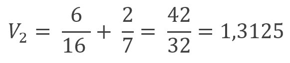
It follows from the above that value of component 2 is greater than value of component 1.
Calculating value of the system
To calculate the value of the whole system, function analysis for the supersystem should be performed, and the system should be considered as one of components.
Comparing value to ideality
Conceptually, value related to function ranking in function analysis is the same as ideality. The only difference is that value can be calculated, while no calculation system has been developed for ideality. Neither benefits nor payment factors have established methods for estimation and calculation.
Articles
- Ideal system
Ideal system
Ideal system
Ideal system is a system with infinite value. It may have no components or associated costs, but still deliver the intended functionality; in other words – it may not exist, but its main function is still being performed.
Overview
Ideality of the system is understood as the ratio of the total benefits provided by the system to the sum of all payment factors associated with it. Payment factors include not only direct costs but also required space, environmental damage, maintenance, etc. Conceptually, ideality is the same as value related to function ranking in function analysis. The only difference is that value of different components of an engineering system can be calculated and compared to assess their contribution to the system’s performance. No similar system has been developed for ideality. Neither benefits nor payment factors have established methods for estimation and calculation.
Ideality can be presented in the form of the following formula:

When all payments of the system become 0, we can call it ideal system.
Difference between ideal system and ideal final result (IFR)
Ideal system is sometimes confused with ideal final result (IFR). These concepts are significantly different, and it is a major mistake to equate them.
The ideal system referes to with infinite value. It has no components or associated costs, but still delivers the intended function(s). In other words, the system does not exist, but its main function is performed.
IFR is a term used in ARIZ. It is****a model of the best solution****to a specific problem, whereby the problem is fully eliminated with minimal changes to the system and without any deterioration of system parameters. However, the system exists, it occupies space, incurs costs, requires maintenance, etc.
Functionality index
Functionality index
Functionality index (also called functionality) is a dimensionless measure of the overall functional contribution of the component to the overall performance of the engineering system.
Overview
The functionality index is used to calculate a component’s value in the value analysis.
It usually depends on the number of useful functions the component performs and ranks of these functions. Originally, harmful functions were also included in the calculation, with points subtracted for their presence. Different factors were also applied to useful functions, depending on their level of performance. Some TRIZ specialists still follow this classical approach.
The method of calculation presented below is one of the simplest.
Calculating the functionality index
Both for devices and for processes, the following steps should be performed to calculate the functionality of a component:
- identify all functions performed by the component / within the operation,
- determine their category,
- rank each useful function (eg. basic / productive – 3pts, additional / providing – 2pts, auxiliary / corrective – 1pt),
- sum up the function points of all functions performed by the component / in th operation,
- normalize the function score.
Since harmful functions are not scored, they are not included in the calculations.
Let’s consider the fllowing example for a device: one of the components (component A) performs 1 harmful function and 3 useful functions:
- 1 basic function (3pts), and
- 2 auxiliary functions (2 x 1pts = 2pts).
The harmful function is ignored, so the total score of the component is 5pts. Let us assume that the sum of point scores for all components of the system equals 41pts. The total function index of component A equals 5/41.
In the same way, the functionality index for operations in processes can be calculated. For example, the sum of point scores for all operations in the process equals 132pts. Within operation X, the following useful functions are performed:
- 2 productive functions (2 x 3pts = 6pts),
- 3 providing function (3 x 2pts = 6 pts), and
- 1 corrective function (1pt).
The total score of the operation X is 13pts; therefore, its functionality index equals 13/132.
Cost analysis
Cost analysis
Cost analysis is a step in function-cost analysis that identifies the absolute and relative costs of components that constitute an engineering system being analyzed.
Overview
Cost analysis is typically conducted in projects aimed at reducing system costs. It is conducted simultaneously with function analysis, specifically during function modeling. Function analysis supplemented with cost analysis is called function-cost analysis.
The analysis provides crucial information about the system and its components. On one hand, it helps identify its cost disadvantages, and on the other, it aids in making decisions about which components should be considered for trimming.
Two types of costs can be considered during the analysis:
- absolute cost, i.e. the monetary value of a component (for example, if a component costs €7, its absolute cost is €7.
- relative cost, i.e. the component’s cost as a percentage of the total cost of the system (for example, if the system costs €1000 and a component costs €23, its relative cost is 2,3%).
Using relative component costs not only makes comparison easier but also provides a more accurate assessment. A cost difference of €4 is significant if the total system cost is €13, but much less so if the system costs €2000. A high relative cost is considered a cost disadvantage. Cost disadvantages, along with function disadvantages, form the building blocks for cause-effect chain analysis.
Effects of the analysis are typically presented by adding a column to the function model table. If the project involves developing an innovation strategy, they can be used to create a function-cost diagram.
Function-cost diagram
Function-cost diagram
Function-cost diagram is the graph that presents function point score (F) of the system components against their cost (C).
Overview
The function–cost diagram is created based on the results of function-cost analysis.
It can be a very helpful in developing an innovation strategy for the system improvement. It also is useful to show if the system has been designed reasonably or not.
Building the diagram
The horizontal axis of the diagram is the sum of the component costs; the vertical axis is the sum of its function point score. After calculating functionality index and the cost of the components, each of them can be placed in the appropriate place on the diagram.

Insights from the diagram
If the functionality index increases proportionally to the cost of the components, it indicates that the engineering system has been optimally designed. To evaluate this, try to draw a straight line between the points representing the components so that they are distributed roughly evenly around it. If successful, it suggests that the system is designed rationally; if the points are scattered widely across the area, the design leaves much to be desired. The steeper the line, the better it is for the system.
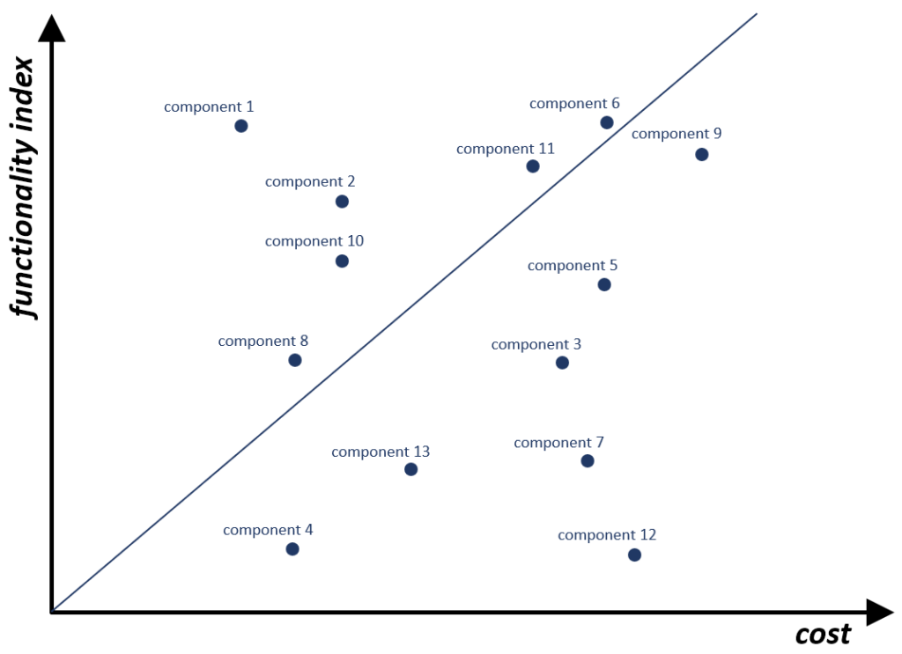
Strategy planning based on the diagram
By splitting the diagram by four parts, the components can be grouped according to their functionality and costs:
A: low cost, high functionality index,
B: low cost, low functionality index,
C: high cost, high functionality index,
D: high cost, low functionality index.
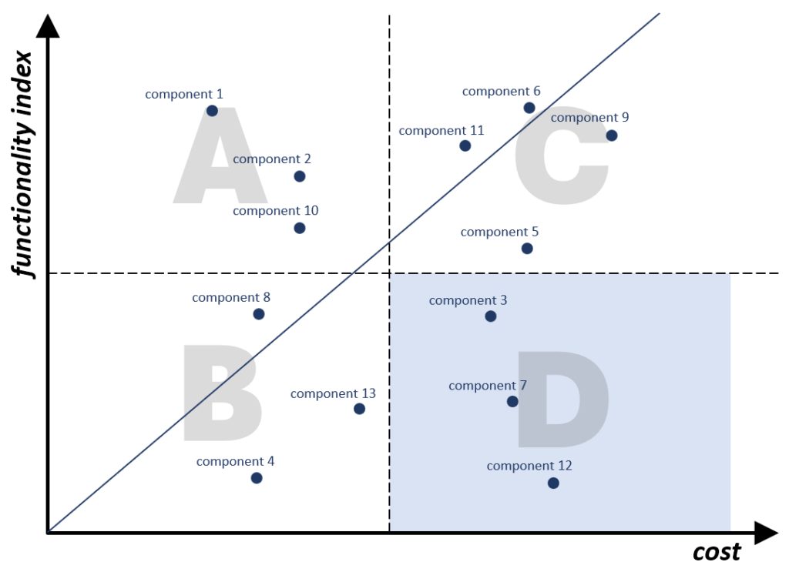
The most valuable components are those that are located in area A (high functionality inex, low cost), which is the desired location for all the components. Locating them in this sector is the basis for developing an innovation strategy.
In practice it means:
- for the components from the section B – increase functionality;
- for the components from the section C – reduce costs;
- for the components from the section D there are two alternative ways:
- increase functionality and decrease costs,
- trim them completely from the system.
Flow analysis
Flow analysis
Flow analysis is an analytical tool that identifies disadvantages in flows of energy, substances, and information in an engineering system.
Overview
Flow analysis compliments function analysis by identifying disadvantages that may not have been revealed through it.
There are three types of flows analyzed during the analysis:
1. substance flow,
2. energy flow, and
3. information flow.
Modeling the engineering system as flows of substance, energy, and information provides an alternative view of the system.
The flows go through their channels, which are the system’s components. That’s why function analysis must be completed prior to flow analysis.
Flow analysis can be conducted for both devices and processes. In either case, the outcome is a list of flow disadvantages. Together with function disadvantages, they can be used as building blocks in cause-effect chain analysis.

Stages of flow analysis
There are two major stages of flow analysis. These are as follows:
- flow partition analysis during which the allocations of flows are identified,
- flow modeling during which the flow model is created (e.g., in a graphical form), and specific flow disadvantages are identified from the list of typical disadvantages.
Algorithm
- Select the type of flows for analyzing.
- Create the first flow channel:
- indicate the components through which the flow is flowing (the outcome of the component analysis can serve as the basis for that, but if needed you should split the components into more granular ones (recommended));
- connect those components.
- Moving along the channel, identify as many flow disadvantages as possible. Use the list of typical flow disadvantages for that.
- Perform the similar actions for other flows.
- Compose the general list of flow disadvantages to use as an input to CECA together with the list of function disadvantages.
Articles
- Flow disadvantage
- Flow
Flow disadvantage
Flow disadvantage
Flow disadvantage is a disadvantage of the analyzed engineering system identified during flow analysis.
Overview
The flow disadvantages analyzed during the flow analysis can be divided into the following types:
- conductivity disadvantages,
- utilization disadvantages,
- harmful flows, and
- flow partition disadvantages.
Flow conductivity disadvantages can be the following:
- bottleneck, i.e., a place in the flow channel where the resistance to flow is significantly increased (e.g., merging traffic lanes);
- stagnant zone, i.e., a place where the flow stops temporarily or permanently (e.g., traffic red light);
- poorly transferable flow (e.g., a speaking tube on a ship);
- long flow (e.g., a power transmission line);
- high channel resistance (e.g., 2-lane traffic compared to 4-lane traffic);
- low flow density (e.g., transport of uncompressed mattresses);
- large number of transformations (e.g., a traditional clock transmission).
Flow utilization disadvantages can be the following:
- gray zone, i.e., a location in a flow where the parameters are difficult to predict (e.g., an icy road);
- channel damages flow, i.e., a location in the channel where the channel damages the flow (e.g., a hole in the road surface);
- flow damages channel, i.e., a location in the channel where the flow damages its channel (e.g., a pipe corroded by the flowing substance).
Flow
Flow
Flow is a movement of substance, energy (field), and information within an engineering system.
Overview
Flow refers to the movement of material objects (substances and energy), or information through space. What matters is its presence and motion within the engineering system under consideration, although it may also partially occur in the supersystem.
Dynamics (movement through space) is a key feature of flow. It exists as long as the “flowing” element is in motion – if it stops, the flow ceases (disappears), even though all of its components remain within the system. This means that flow can “disappear” from the system without removing any of its components.
Flows in the system are analyzed during the flow analysis, which is performed after the function analysis. There are three types of flows analyzed:
1. substance flow,
2. energy flow, and
3. information flow.
Categories of flows
There are four categories of flows. They are the following:
Useful flow is a flow whose object (substance, energy, or information) performs a useful function or is an object of a useful function.
Harmful flow is a flow whose object (substance, energy, or information) performs a harmful function.
Wasted flow is a flow that is characterized by losses of substance, energy, or information.
Neutral flow is a flow that has an irrelevant or insignificant influence on the engineering system.
Cause-effect chain analysis
Cause-effect chain analysis
Cause – effect chain analysis (CECA) is an analytical tool that identifies the key disadvantages of the engineering system. This is accomplished by building cause-effect chains of disadvantages that link the initial disadvantage with its fundamental causes.
Overview
Regardless of whether you are dealing with a device or a process, it is essential to conduct a function-cost analysis and (optionally) a flow analysis before performing CECA. Function and cost disadvantages, as well as flow disadvantages (if identified) are the fundamental building blocks of CECA, and all of them should be considered in the analysis.
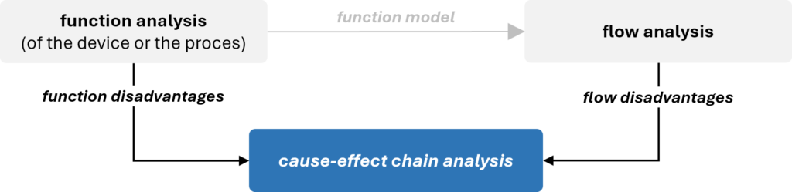
The primary outcome of CECA is a list of key disadvantages.
Cause-effect chain analysis can be performed for both devices and processes.
Performing CECA
Procedure
Building CECA begins with the initial disadvantage formulated by inverting the goal of the project. Next, we ask the question why? to understand what directly causes it. Disadvantages identified in earlier analyses are typically used at the beginning of the chains. However, they can also appear in the middle or at the end of the chain, as they are not always the direct cause of the initial disadvantage.
As the chain progresses downward, more disadvantages are revealed, with each subsequent one serving as the cause of the previous one. Disadvantages that lie between the initial disadvantages and the key disadvantages are referred to as intermediate disadvantages.
The final step of the analysis is to designate certain disadvantages as key disadvantages, and it is up to you to decide which ones to select. Usually, they can be found the end of the chains, however it is not uncommon to assign the status of key disadvantage to some intermediate disadvantages.

Starting and ending the analysis
The key point in CECA is to determine where to start and when to stop the chain.
As mentioned, the starting point for the analysis is always the initial disadvantage. As for stopping the analysis, there are two main recommendations:
- If the disadvantage is caused by a natural phenomenon (physical, chemical, biological, geometric, etc.), asking questions why? further is meaningless. For example, if it is needed to answer the question Why does water consist of hydrogen and oxygen molecules?, the answer is always *That is just the way it is**.*
- If the cause of the disadvantage is beyond your control and influence of this project. It may be caused by administrative or legislative restrictions that cannot be circumvented (e.g., radiation level is limited by the law), project constraints may prevent from solving the problem that lies behind the disadvantage (e.g., redesigning the component associated with the disadvantage exceeds the project budget), or you may have no influence on the solution of the problem that is behind the disadvantage (e.g., a certain assembly cannot be redesigned since it is provided by an external supplier).
Sometimes, a chain cannot be completed because the cause of the disadvantage leads back to a previous one, creating what is known as a vicious circle.
AND and OR operators
If one disadvantage is caused by two or more disadvantages, it is necessary to use one of the operators that indicate the relationship between them:
- operator AND is used if at least two causes have to occur simultaneously for a disadvantage to appear; removing one of them does automatically remove the other;
- operator OR is used if one disadvantage is caused by several factors that are independent of each other; removing one of them does not remove any other automatically.
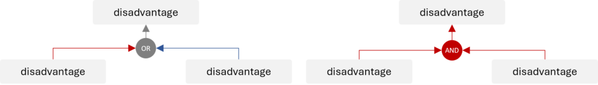
Recommendations
The technique used for building cause-effect chains involves multiple asking the question why?It is recommended that at least 5 levels down from the initial disadvantage be analyzed, what means that the question why? should be asked at least five times (that is why this tool is sometimes called a method of 5 Whys).
It is recommended to complete the entire branch of the chain before starting the next one.
Note that CECA is composed of disadvantages only. Do not enter positive and advantageous effects into the chain.
Articles
- Key disadvantage
- Initial disadvantage
- Vicious circle
Key disadvantage
Key disadvantage
Key disadvantage is a disadvantage selected to be eliminated to achieve the goal of the project. Usually, key disadvantages appear at the root of cause-effect chains.
Overview
The initial disadvantage is always predetermined by the goal of the project. The selection of key disadvantages is your decision.
Usually, key disadvantages can be found at the roots of cause-effect chains or close to them; however, the its status can be assigned to any intermediate disadvantage of the chain.
Relation between key disadvantages and key problems
Some of key disadvantages are directly reformulated into key problems, the others can be used in trimming. The component immediately associated with the key disadvantage may be trimmed from the system, thus, the key disadvantage disappear together with the trimmed component and trimming problems are generated instead.
Another scenario includes performing feature transfer on the component associated with key disadvantage. It generates a set of feature transfer problems.
Trimming problems and feature transfer problems have the status of key problems.

Recommendations
It is recommended to examine the entire chain when selecting key disadvantages. Some disadvantages may be easy to eliminate, or certain issues might have already been resolved in the past. Consider who could assist you in this process.
A key disadvantage formulated around a parameter is usually easier to model using an engineering (technical) or physical contradiction. For example, if the key disadvantage is that an element is too thin, it can be relatively straightforward to model it as a physical contradiction: the element should be thick because…, and it should be thin because…
Consider the disadvantages located in the branch containing the AND operator – removing one can eliminate (collapse) the entire branch or part of the chain.
Initial disadvantage
Initial disadvantage
Initial disadvantage is a disadvantage in the analyzed engineering system, the elimination of which is the goal of a project. The initial disadvantage is formulated as an inverted project goal.
Overview
Initial disadvantage is the starting point for the cause-effect chain analysis. It is formulated by inverting the goal of the project.
For example, if the project’s goal is to improve the final product’s purity, the initial disadvantage would be stated as: the product is contaminated. Similarly, if the project’s goal is to reduce the cost of engine assembly, the initial disadvantage would be phrased as: the cost of engine assembly is high.
Some projects have more than one goal. This means that they have several initial disadvantages, and separate CECAs are built for each of them. The disadvantages that come from branches of different initial disadvantages may be interconnected.
Vicious circle
Vicious circle
Vicious circle is a situation in CECA when a disadvantage causes new disadvantages that lead to the original disadvantage to occur again.
Overview
When building a CECA, we always aim to reach the end of the chains during the analysis. However, there may be situations where the cause of a disadvantage leads back to a previous disadvantage – either intermediate or even the initial one. This creates a vicious circle, where the chain has no definitive end.
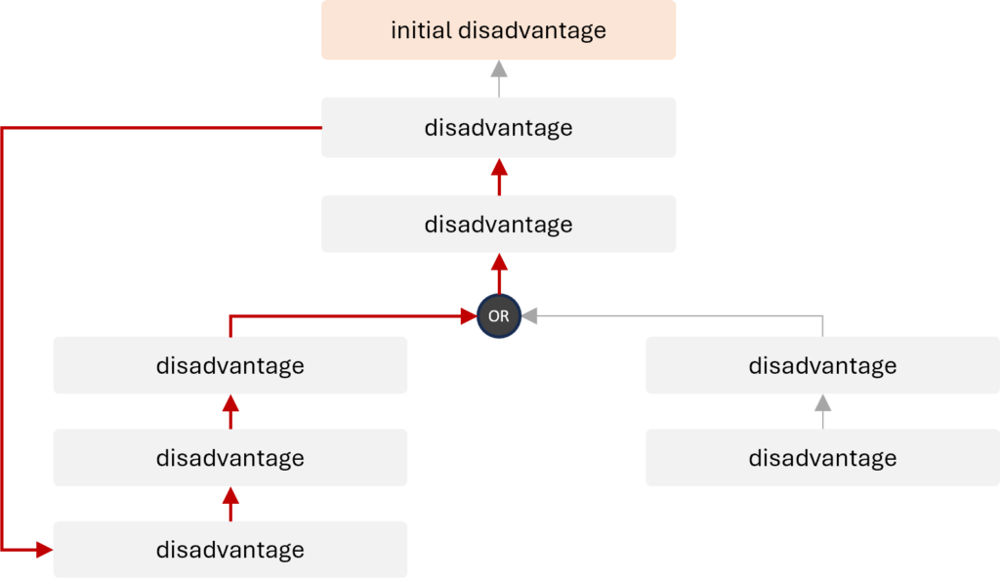
To break the vicious circle, any of its disadvantages can be selected as a key disadvantage. It is recommended to select the one that will be easier to address according to your opinion.
Trimming
Trimming
Trimming is an analytical tool for improving an engineering system by removing (trimming) certain components and redistributing their useful functions among the remaining system or its supersystem components, while preserving quality and performance of the system.
Overview
Trimming is one of fundamental analytical tools. Like feature transfer, it is a problem-generating tool since it creates problems that have never existed before. Solving these problems leads to entirely new and unexpected solutions.
Trimming aims to improve an engineering system by reducing the number of its components and simplifying the system. Eliminating components responsible for key disadvantages increases the system’s value by reducing its costs while maintaining or enhancing its overall functionality.
Trimming offers multiple options for eliminating the same component. These options represent a spectrum of possible innovations – from incremental to more radical. It also reveals a set of problems that other approaches cannot detect. It yields new problem statements, and also points toward effective solutions.
The input into trimming are the following:
- function model including useful functions, developed during the function analysis, and
- key disadvantages identified in CECA.
The function model provides information about which useful functions of the trimmed components should be preserved in the system and what new carriers can be used. The key disadvantages, on the other hand, indicate components to trim, as those directly associated with key disadvantages are recommended to be removed from the system first.
The output of trimming is one or more trimming models, and a list of trimming problems.
Trimming is guided by a set of rules that determine which components to trim and/or how to redistribute their useful functions. However, a different set of rules applies to devices and another to processes.
In some projects, completely removing a component recommended for trimming may be impossible or impractical. In such cases, partial trimming can be applied.
Selecting components for trimming
When selecting components for trimming, the decision should align with the project’s goal. If the goal is to reduce costs, consider removing the most expensive component. If minimizing weight is a priority, eliminate the heaviest one. For size reduction, focus on the largest component.
To determine which component to trim, it is advisable to use the following approaches:
- Utilize the list of components directly linked to key disadvantages identified through CECA. This method is widely applied in most projects. By removing the component responsible for a key disadvantage, the associated issue is effectively addressed.
- In cost-reduction projects, rely on cost assessments, such as those derived from function-cost analysis. This provides insights into the costs of units and their individual parts. When the project aims to cut costs, it is logical to trim the most expensive components.
- For general system improvement, refer to strategies like those outlined in the function-cost diagram. One effective approach is to eliminate components with the lowest value, typically found in quadrant D of the diagram. This method helps in improving the overall system by removing elements that contribute the least value.
The decision to complete the trimming process is made by the team. After removing the selected component and addressing the trimming problems, the process can be concluded or repeated for another component.
Difference between trimming for devices and trimming for processes
The key difference between trimming for devices and trimming for processes lies in the trimming rules.
For devices, there are three trimming rules that can be applied to functions of any rank, with some limitations for rule A. In the process, a trimmed operation comprises a set of functions with different ranks, and each function requires a distinct approach to be effectively addressed. Therefore, there is no universal set of trimming rules, but there are different sets of rules for carriers of function of a specific rank.
Trimming for processes is usually more radical than trimming for devices. While for devices, component by component are trimmed, for processes, an entire operation is eliminated, along with its associated equipment, tools, labor, energy, raw materials, etc.
Articles
- Trimming rules
- Trimming model
- Partial trimming
- Trimming problem
Trimming rules
Trimming rules
Trimming rule is an option for eliminating a component of an engineering system by either eliminating its useful functions or redistributing them to other system or supersystem components.
Overview
Trimming rules are scenarios according to which the process of trimming is conducted and they represent the key difference between trimming for devices and trimming for processes. For devices, there are three trimming rules that can be applied to functions of any rank (with some limitations for rule A). In the process, a trimmed operation comprises a set of functions with different ranks, and each function requires a distinct approach to be effectively addressed. Therefore, there is no universal set of trimming rules, but there are different sets of rules for carriers of function of a specific rank. Trimming for processes is usually more radical than trimming for devices. While for devices, component by component are trimmed, for processes, an entire operation is eliminated, along with its associated equipment, tools, labor, energy, raw materials, etc.
Trimming rules should always be selected considering the goal and constraints of the project, as well as the boundaries of the system.
Trimming rules for devices
When selecting a component of the device to trim, one of three trimming rules can be applied.
Rule A: Function carrier can be trimmed if the object of its useful function is removed too.

Rule A is the most radical of all the options for trimming – two components are removed at once. If the object of the function does not exist, the carrier of this function is no longer needed.
That rule should be used with caution. It is recommended that it be applied when the system is over-engineered and consists of too many components.
It is not recommended that Rule A be applied when the component being trimmed performs a basic function, because then the target must be also removed. Theoretically it is possible, but it does not happen often.
Rule B: Function carrier can be trimmed if the object of function performs its useful function itself.

Rule B, sometimes referred to as the self-service rule, is less radical than Rule A. However, remember that the component that is supposed to perform a new function on itself may have limited resources, and it might be challenging to “teach” it to do so.
Rule C: Function carrier can be trimmed if another component performs its useful function.

Rule C is the most frequently used scenario, since it is much easier to meet its conditions than for A or B. The system and its supersystem contain a number of components that gives a broad choice of new function carrier selection. The new function carrier should meet at least one of the four conditions:
- The component already performs an identical or similar function on the object of function.
- The component already performs identical or a similar function on another object.
- The component performs any function on the object of function, or it at least simply interacts with it.
- The component has resources necessary to perform the required function.
Trimming rules for processes
Trimming for processes involves entire operations, but the sets of trimming rules apply to individual functions performed within them. According to some rules, performing a function may not be necessary, but this does not mean it is being trimmed.
There is no universal set of trimming rules here, but there are different sets of rules for carriers of functions of a specific rank.
There are five different sets of trimming rules, and each of them may contain a different number of rules. They are as follow.
Trimming rules for productive functions
When trimming the operation with productive function, the function can be handled the following ways:
Rule A: it can be eliminated if its object is eliminated from the system.
Rule B: it can be eliminated if the necessity to perform it is eliminated.
Rule C: it can be transferred to another operation.
Trimming rules for providing functions
When trimming an operation with providing functions, the functions are handled depending on the rank.
Supporting functions
Supporting function can be handled the following ways:
Rule A: it can be eliminated if the operation with the supported function is trimmed.
Rule B: it can be eliminated if the operation with the supported function is changed so that no support is required now.
Rule C: it can be transferred to the operation with the supported function.
Rule D: it can be transferred to another operation.
Transport functions
Transport function can be handled the following ways:
Rule A: it can be eliminated if its object is eliminated from the system.
Rule B: it can be eliminated if the entities between which its object moves are eliminated from the system.
Rule C: it can be eliminated if the subsequent operations are changed in such a way that it eliminates the need to perform the transport function.
Rule D: it can be transferred to another operation.
Measurement functions
Trimming rules for measurement functions direct us to the rules for other functions. They can be handled the following ways:
Rule A: it is handled according to trimming rules for the productive function if the measurement function is needed as the final output (for example, research, statistics, etc.).
Rule B: it is handled according to trimming rules for the supporting function if the measurement function is needed for the provision of another operation.
Trimming rules for corrective functions
When trimming the operation with corrective function, the function can be handled the following ways:
Rule A: it can be eliminated if the defect-generating operation is trimmed.
Rule B: it can be eliminated if the defect-generating operation is changed in such a way that the defect is not generated any longer.
Rule C: it can be eliminated if the defect-generating operation is changed in such a way that the defect is generated with another (safe) set of parameters; in this case the defect ceases to be a defect and the need for performing a corrective function is eliminated.
Rule D: it can be eliminated if operations which are harmed by the defect are trimmed.
Rule E: it can be eliminated if operations which are harmed by the defect are changed in such a way that they become insensitive to it; in this case the defect ceases to be a defect and the need for performing a corrective function is eliminated.
Rule F: it can be transferred to the defect-generating operation.
Rule G: it can be transferred to another operation.
Trimming model
Trimming model
Trimming model is a function model of an improved engineering system developed through trimming.
Overview
The trimming model is created by applying trimming to the function model of the system. Each alternative trimming scenario results in a different model, hence there may be several (theoretically, infinitely many) trimming models deriving from different scenarios.
As the trimming model is a function model, it is presented in the same format – either as a table or a graph.
Procedure of creating a trimming model
For both devices and processes, creating a trimming model consists of the following steps:
- Select the component to trim.
- Select a useful function of that component.
- Select an appropriate trimming rule.
- Perform trimming according to the selected rule.
- Formulate trimming problems generated by step 4.
- Repeat steps 2-5 for all the functions of the component being trimmed.
- Repeat steps 1-6 for all the components to trim.
Partial trimming
Partial trimming
Partial trimming is redistributing some useful functions of a system component to other components, while leaving the component in the system for performing remaining functions.
Overview
In simple terms, partial trimming means that the component remains in the system, but redistributing some of its useful functions to other components leads to its “unloading.” This often allows for reducing the component’s cost, size, weight etc.
The picture below presents an example. Consider a system component (component 1) that performs three useful functions but is large and heavy. By delegating two of its functions to other component (component 3), it can be made smaller and lighter. Component 1 remains in the system, but after partial trimming, it performs only one function, and its key disadvantages – size and weight – are eliminated.

Partial trimming can be applied to all engineering systems – both devices and processes. Just like with typical trimming, the redistribution of functions follows specific trimming rules, accordingly for devices and processes.
Trimming problem
Trimming problem
Trimming problem is a problem that must be resolved to realize the trimming model.
Overview
The trimming problem is usually presented in the form of a question: How will the new function carrier perform the function?
Just like feature transfer problems and key disadvantages from CECA, trimming problems can be reformulated into key problems, which are the output of the problem-identification stage of the project.
Feature transfer
Feature transfer
Feature transfer is an analytical tool for improvement of an engineering system given (base system) by transferring certain features from the alternative system (competing system) with the aim to combine the useful features in a single system.
Overview
Feature transfer is a special tool facilitating the innovative hybridization. It has been designed to improve engineering systems (both devices and processes) by transferring desirable feature(s) from one or more feature-providing systems to the base system.
Like trimming, feature transfer is a problem-generating tool. It creates problems that have never existed before. Solving these problems leads to entirely new and unexpected solutions.
Feature transfer is a tool that not only helps reduce the cost of innovation but also minimizes the associated risks, as the required functions already exist in other engineering solutions. From another perspective, this tool expands the range of available resources for addressing key disadvantages of the analyzed engineering system.
Depending on the goal of the project, future transfer can be used at two different points of the analytical stage:
- At the beginning of the project for new product development when it is used to hybridize the systems identified during benchmarking. This mode of hybridization usually changes the system considerably.
- After CECA, as one of the scenarios to handle key disadvantages(trimming is the other one). This mode of hybridization does not change the system much.
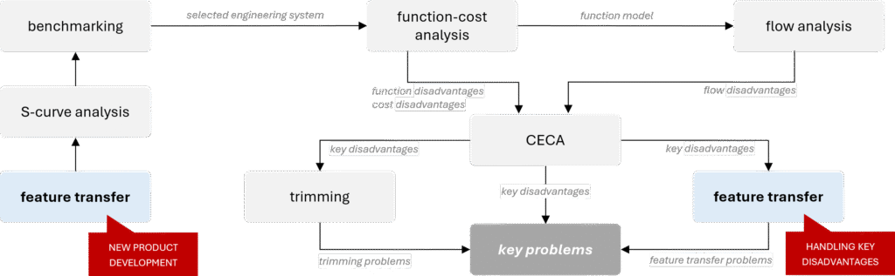
The outcome of feature transfer is a set of feature-transfer problems about how to transfer one or more features.
Feature transfer algorithm
Feature transfer algorithm is the following:
- Identify the main function of the initial system / component that is being improved.
- Formulate its advantages and disadvantages.
- Identify the pool of competing systems.
- Select an alternative system from the pool of the competing systems.
- Select the base system out of the initial and the alternative systems (the base system is the one that was selected for improvement (transferring a feature to).
- Use CECA to identify the feature in the alternative (feature-providing) system that can eliminate the disadvantage of the base system.
- Formulate the feature transfer problem.
When selecting alternative systems for feature transfer, multiple options may be considered. In such cases, the application of each system should be developed separately, and steps 4–7 should be repeated for each.
Nuances of feature transfer
Multi-step feature transfer
Feature transfer can be highly useful for combining the advantages of different alternative systems. If a solution does not meet the requirements or still has disadvantages, the algorithm can be repeated as many times as necessary until all advantages are consolidated in a single system or all required parameters are achieved.
No matter how many systems you are going to combine, work on one case at a time.
Three levels of feature transfer
Feature transfer can be conducted at three levels of engineering complexity. Depending on project conditions, constraints, and the desired level of innovation, the following can be transferred to the base system:
- a feature along with its physical carrier,
- a feature along with its physical carrier, but in the form of a mixture,
- a pure feature (without its physical carrier).

Physical system integration – transferring the feature along with its carrier
Transferring the feature along with its physical carrier is the simplest way; however, it is characterized by the lowest level of innovation and patentability.
This method is quick and easy but can only be applied if the base system has enough space for the feature-providing component/system.
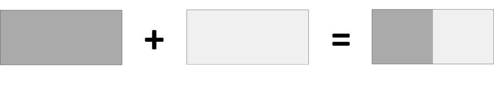
Mixture - a special case of physical system integration
Mixture is a more advanced form of transferring a feature along with its physical carrier. This approach typically results in more innovative solutions compared to directly transferring a physical component.
The method involves breaking down the feature-providing component into small particles and mixing these particles with the corresponding component of the base system. From a macro-level perspective, only the base system component is recognizable, while at a micro level, the particles of the feature-providing component are also present.

Mixture is typically considered when there is not enough space in the base system for the feature-providing component. However, a key requirement is that the particles of the feature-providing component must retain the feature intended for transfer. For example, embedding magnet particles in silicone results in magnetic silicone.
Pure feature transferring
For the most innovative solutions, the pure feature transfer is the most desired way. Transferring the feature without any physical component completely blurs the boundary between systems, making their identification no longer possible. Such solutions not only represent the highest level of innovation but also have the greatest potential for patentability.
Neutral (or inert) system
A neutral (or inert) system is defined as a system whose advantage lies in the absence of the base system’s disadvantage, while its disadvantage is that it does not perform the desired main function. Since a neutral system does not fulfill the intended function, it is typically chosen for its low cost or even for being freely available. Common examples include air, water, sand, etc.
During hybridization, the base system provides the required functionality, while the neutral system neutralizes the drawback, effectively “diluting” its negative impact.
Articles
- Neutral system (Inert system)
- Base system
- Alternative system
- Competing system
- Feature transfer problem
Neutral system (Inert system)
Neutral system (Inert system)
Neutral system (Inert system) is a system that does not have the disadvantage of the base system (it is its advantage), but it also does not perform the desired main function (does not work) that is considered to be its disadvantage.
Overview
Neutral (or inert) system is a type of feature-providing system used in feature transfer.
It is defined as a system whose advantage lies in the absence of the base system’s disadvantage, while its disadvantage is that it does not perform the desired main function. During hybridization, the base system provides the required functionality, while the neutral system neutralizes the disadvantage, effectively “diluting” its negative impact.
Since a neutral system does not fulfill the intended function, it is typically chosen for its low cost or even for being freely available. Common examples include air, water, or sand.
Base system
Base system
Base system is a system to which features from the alternative system is transferred. The base system is the alternative system selected for improvement.
Overview
The term of base system is used in feature transfer.
The base system should not be equated with the initial system, as they are not always the same. The initial system is the one from which we start the feature transfer procedure, while the base system is ultimately selected after identifying the pool of alternative systems.
Recommendations for selecting the base system
When selecting the base system, it is important to remember that it will not necessarily be the initial system. It is recommended to choose the simplest or cheapest system, assuming all other conditions are equal.
Engineers naturally tend to prefer their own system as the base, either because the project aims to improve it or because it contains the component responsible for the key disadvantage. However, the final decision should be based on the project’s goals and constraints. In some cases – especially when developing a new product – it may be more beneficial to transfer the features of the initial system to an alternative system.
Sometimes, both systems may be strong candidates for the base system. In such cases, it is worth conducting feature transfer for both options, as this can lead to a broader set of potential solutions.
Alternative system
Alternative system
Alternative system is a competing system that has a complementary, to the base system, pair of advantages and disadvantages.
Overview
The term of alternative system is used in feature transfer.
The alternative systems are selected from the list of competing systems, meaning they always perform the same (or similar) main function. What distinguishes them is that they have exactly opposite advantages and disadvantages (identified in the first step of the feature transfer procedure) compared to the initial system/component that is being improved.
Examples of the alternative systems can be the following:

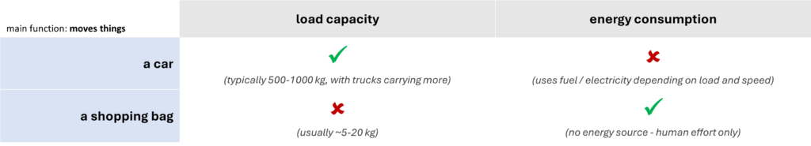
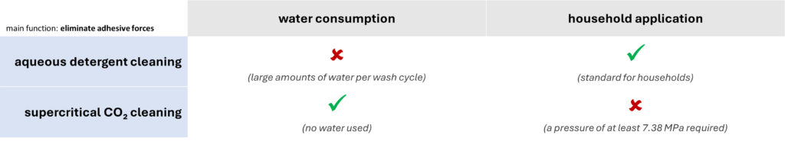
Competing system
Competing system
Competing system is an engineering system that performs the same or similar main function as the analyzed system.
Overview
The term of competing system is used in feature transfer. These are systems that can potentially provide features needed by the initial system/component that is being improved.
At the stage of their identification, main function is the only criterium for selection. A special attention must be given to its correct formulating. A poorly defined main function can lead to incorrect identification of systems (for example, a movie theater and a television are not competitive systems).
The competing systems can be found in a similar or entirely different fields, industries, or environments, also in fairytales or sci-fi stories. Their design, scale, or utilized resources can be extremely different.
A specific case of a competing system is an alternative system.
Competing systems for devices and for processes
Depending on the project, competing systems can be identified for devices or for processes.
Some examples for devices can be the following:
| system | a hair dryer | a car | a light-bulb |
| main function | removes moisture (liquid) | moves things | generates light |
| competing systems | a sponge an activated charcoal a heater a centrifugal dryer a paper towel a freeze-dryer an electrolyzer | a boat a shopping bag an elevator a conveyor belt a magnet (for metal objects) a drone a dimensional portal | a glow sticks LED (light-emitting diode) a candle a firefly phosphorescent material Tesla coil a smartphone screen |
An example of a process can be an aqueous detergent cleaning performed in a washing machine. It has been designed to eliminate adhesive forces between dirt particles and fibers. Some examples of competing systems can be the following:
- ultrasonic cleaning,
- microwave cleaning,
- dry cleaning (with organic solvents),
- cryogenic cleaning (dry ice or liquid nitrogen),
- laser ablation,
- supercritical CO₂ cleaning, etc.
Feature transfer problem
Feature transfer problem
Feature transfer problem is a key problem that must be resolved to realize feature transfer.
Overview
Just like trimming problems and key disadvantages from CECA, feature transfer problems can be reformulated into key problems, which are the output of the problem-identification stage of the project.
The feature transfer problem is usually presented in the form of a question, for example:
- How to do something?
- How to make something bigger?
- How to make someting lighter?
Key problem
Key problem
Key problem is a problem that has been selected for solving to achieve the goal of the project.
Sources of key problems
Key problems are identified during the problem-identification stage of the project.
They are derived using the following tools:
- cause effect-chain analysis (CECA),
- trimming, or
- feature transfer.
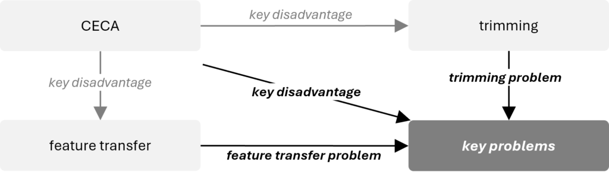
If components directly associated with the key disadvantages are subjected to trimming, trimming problems are generated. Another scenario involves performing a feature transfer on components linked to the key disadvantages, which generates a set of feature transfer problems. Both trimming problems and feature transfer problems are classified as key problems.
The key disadvantages identified through CECA that are not further used in trimming or feature transfer are converted into key problems.
In projects that aim for minimal changes to the system, particularly complex key problems are addressed using ARIZ.
Models of key problems
TRIZ operates with 4 types of problem models:
- engineering contradiction,
- physical contradiction,
- substance-field model (Su-Field) of the problem, and
- function.
Depending on the model, the following tools are used to resolve key problems:
| model of the problem | tool used to process the problem model | model of solution |
| engineering (technical) contradiction | 1. contradiction (Atshuller) matrix | 1. inventive principle |
| physical contradiction | 1. algorithm of resolving physical contradiction 2. function-oriented search (FOS) 3. database of scientific effects 4. clone problems application | 1. inventive principle 2. technology identified during FOS 3. scientific effects |
| Su-Field | 1. system of 76 standard inventive solutions | 1. standard inventive solution |
| function | 1. function-oriented search (FOS) 2. database of scientific effects | 1. technology identified during FOS 2. scientific effect/phenomenon |
S-curve analysis
S-curve analysis
S-curve analysis is an analytical tool based on the trend of S-curve evolution that determines where an engineering system is in its development and what steps should be taken to improve it.
Overview
Pragmatic S-curve analysis evolved from the classical approach originally developed by Altshuller. Experience has shown that the practical application of the method based on the four indicators he proposed often poses significant challenges, and the results of such analysis are not always fully reliable.
In the modern approach to the S-curve, both technical and market indicators are considered essential for gaining a more comprehensive understanding of a system’s development. Key factors include the system’s market presence and the behavior of its MPV.
Pragmatic S-curve analysis incorporates an extensive list of indicators that enable precise identification of each stage, along with a set of strategic recommendations tailored to every phase.
Innovative benchmarking
Innovative benchmarking
Innovative benchmarking is an analytical tool that identifies the best engineering system for improvement and engineering system candidates for feature transfer.